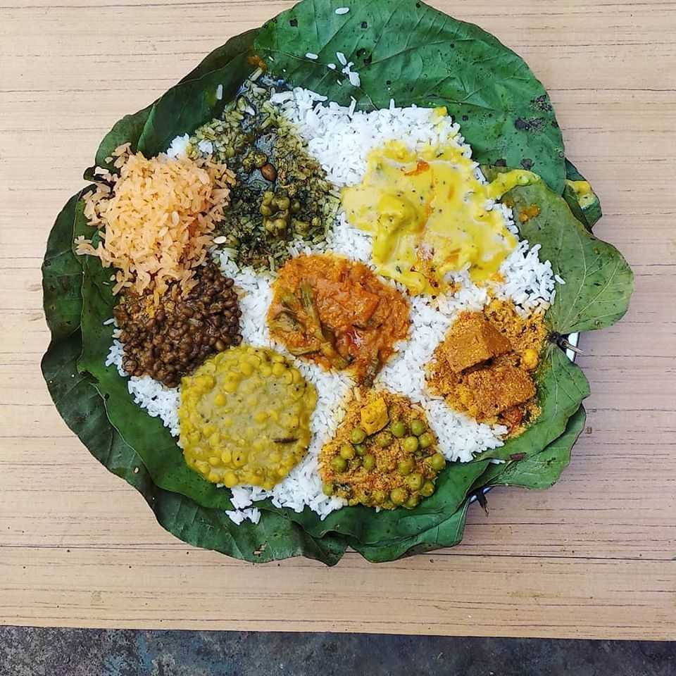
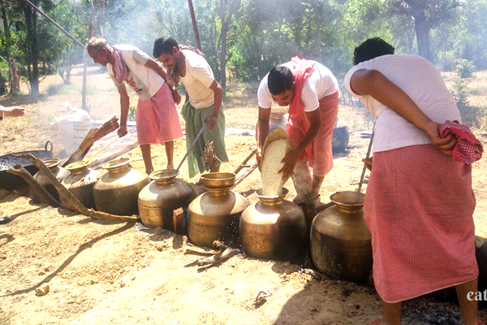
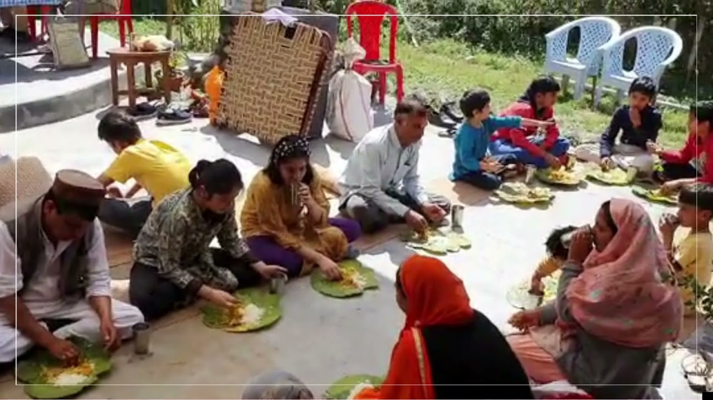

Kangri Dham
Love For Kangri Dham
Inside Kangri Dham


Image shows the prepration process

The menu starts with-
-
Rice, Moong dal, Rajma (Red Kidney Beans), Chole (Chickpea) is cooked
in Desi Ghee which is known as ‘Madrah’.
-
It is then followed by preparing ‘Maash dal’ which is mixed with three
types of dals- Moong dal, Urad dal, Masoor dal.
-
It is then topped with Khatta, which is prepared by Jaggery and
Tamarind in an iron vessel.
-
Finally, ‘Mitha Bhaat’ is served which is a sweet made of either sweet
rice or bread crumbs in yoghurt.
For more information click on Content
You can also reach me by clicking on about.